Zveme vás na naši svatbu
Filip & Anička
Nevíme, jak to Filip dokázal, ale Anička souhlasila. Po deseti letech zkušební doby to konečně uděláme oficiálně.

sobota
03 · 07 · 2027
Penzion Kůlna, Jedovnice
Nevíme, jak to Filip dokázal, ale Anička souhlasila. Po deseti letech zkušební doby to konečně uděláme oficiálně.
Sobota 3. července 2027
Penzion Kůlna, Senetářov 114, 679 06 (u Jedovnic)
V navigaci zadejte Senetářov 114.
Parkovat se bude na louce.
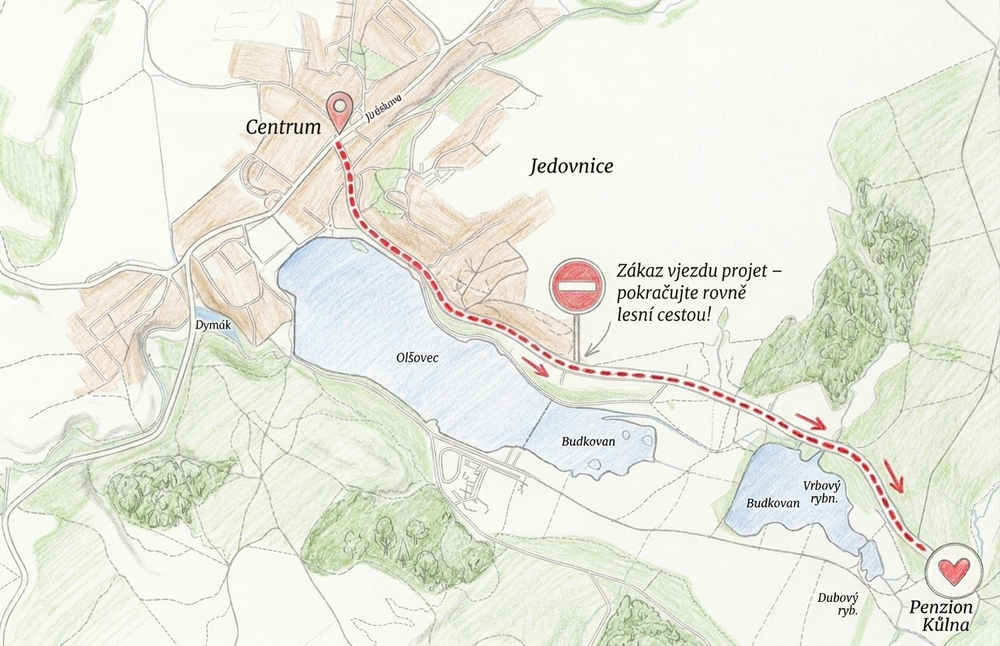
Podrobný program dne vám brzy doplníme.
Pár momentek z cesty, která nás po deseti letech dovedla až k oltáři.
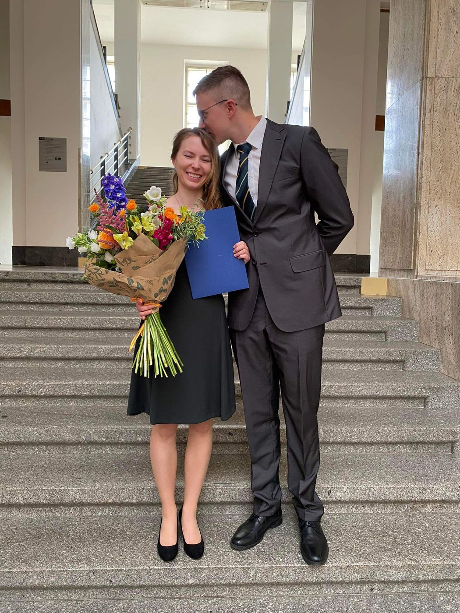
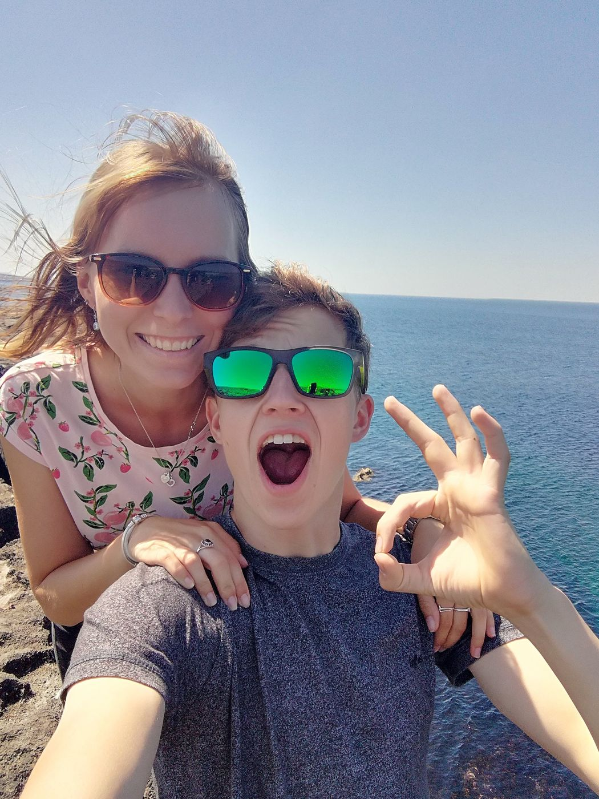
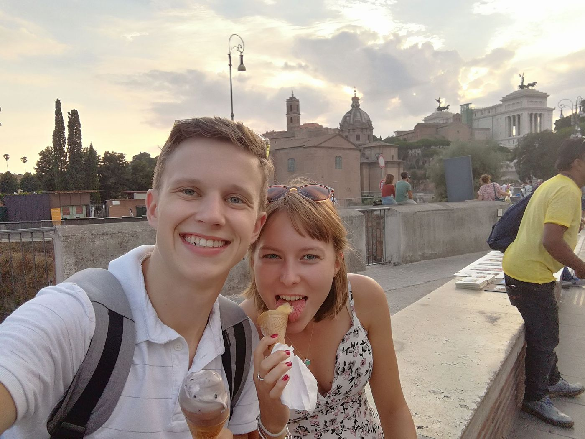
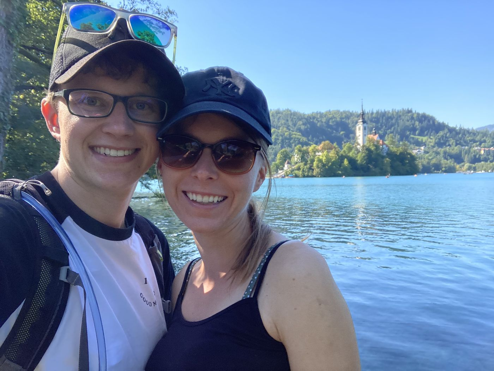
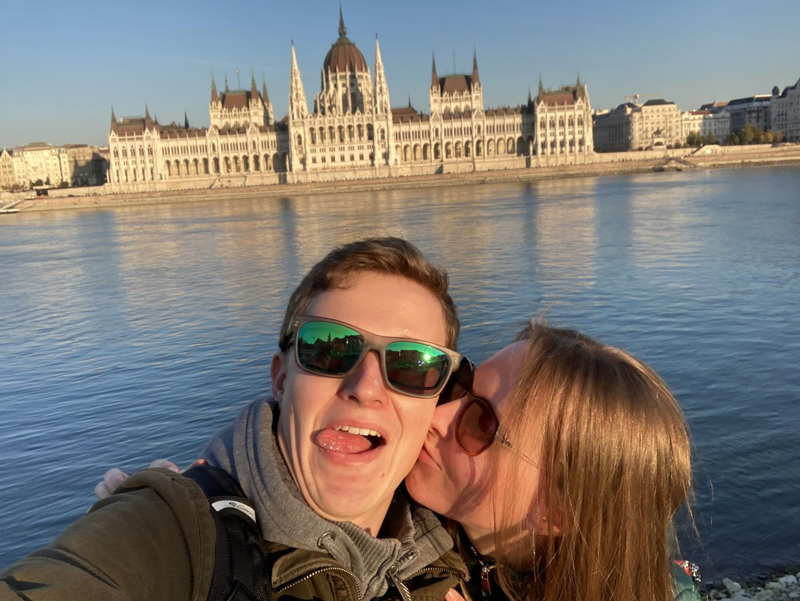
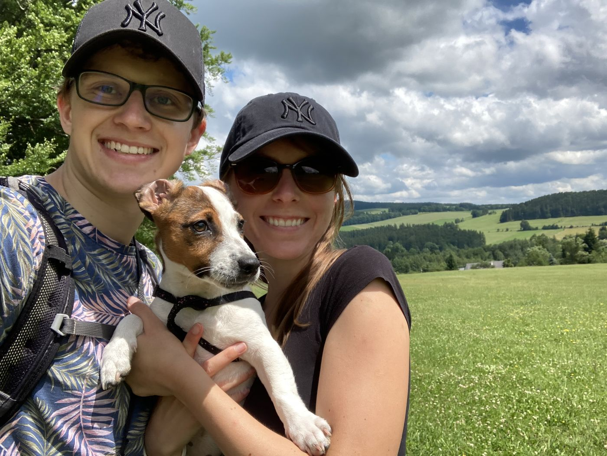
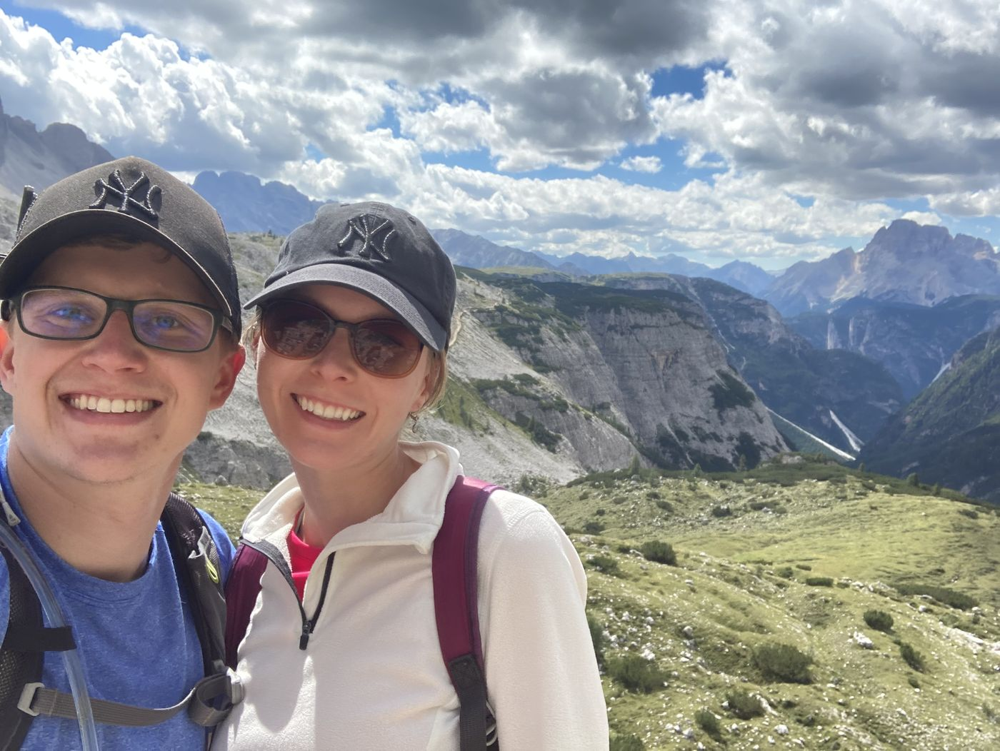
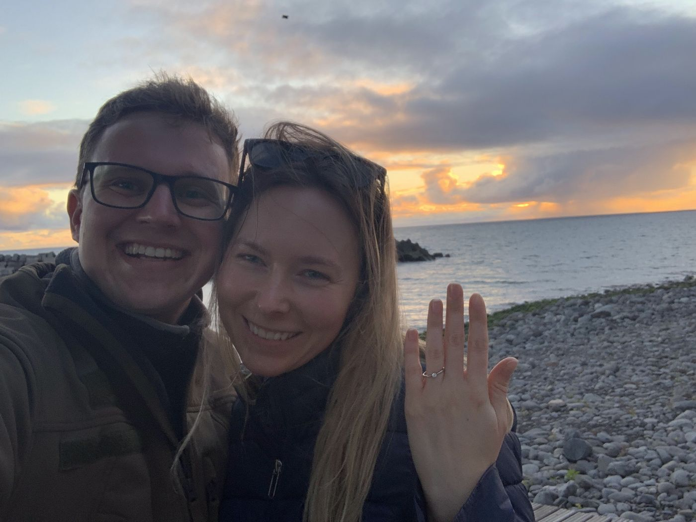
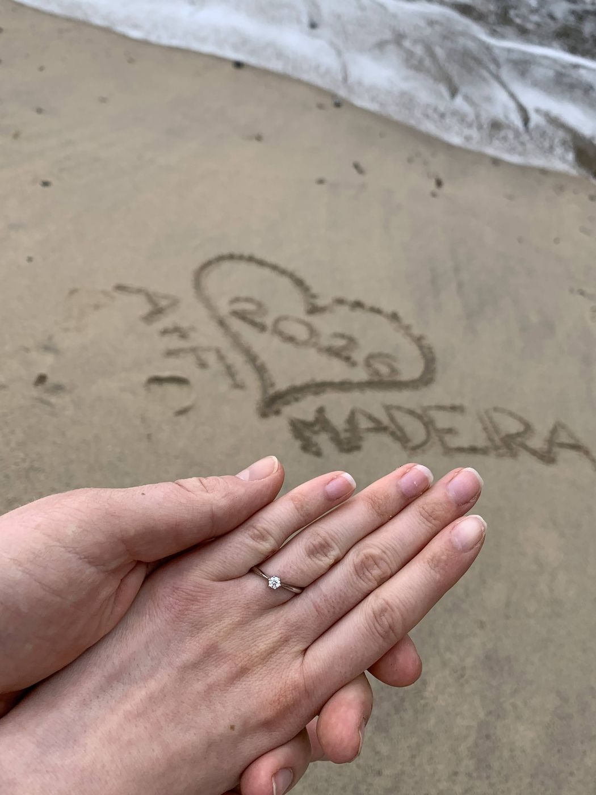
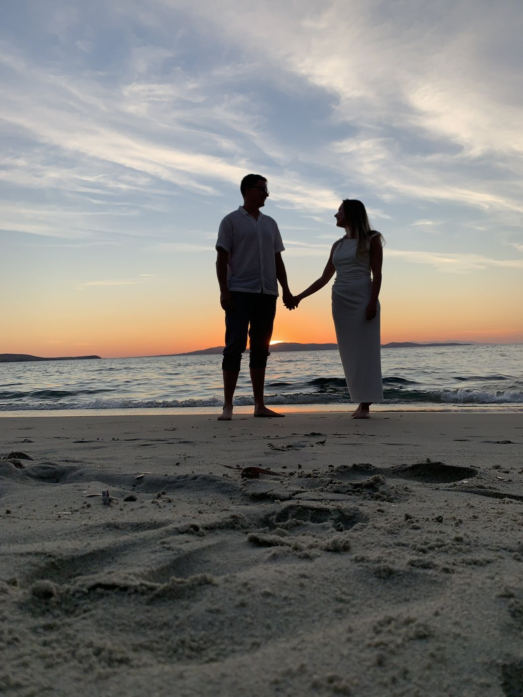
Rodina to má jasné: přespí v penzionu a zaplatíme to my. Přátelé si můžou užít kempování pod širým nebem, nebo se po zábavě nechat odvézt domů do vlastní postele.
Pro rodinu. Postel, střecha nad hlavou a zaplaceno. Jen nám prosím včas dejte vědět, že o spaní stojíte, ať s vámi můžeme počítat.
Pro přátele. Přijeďte se stanem, obytňákem nebo karavanem, nebo spěte v autě, pod autem či pod širým nebem. Je to jako na festivalu, jen s lepší společností, a všechno to může stát venku na trávě u penzionu. WC i sprcha budou po ruce.
Snídani si můžete objednat předem po domluvě za příplatek. Hladový host je nešťastný host a ráno po svatbě i dost nebezpečný, takže nám prosím včas dejte vědět.
Penzion leží v tiché krajině Moravského krasu. Více o místě najdete na kulna-jedovnice.cz.
Dejte nám prosím včas vědět, zda dorazíte. Ve formuláři vyplníte také stravovací požadavky, zájem o ubytování a snídani.
Formulář připravujeme, odkaz se tu brzy objeví.